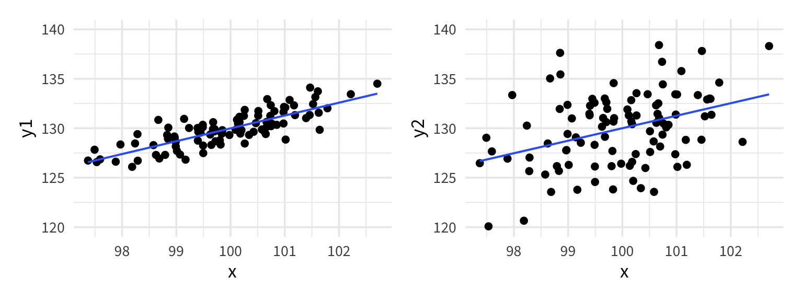

Call:
glm(formula = Removed/Placed ~ Distance * Morph,
family = binomial, data = case2102, weights = Placed)
Null deviance: 35.385 on 13 degrees of freedom
*Residual deviance: 13.230 on 10 degrees of freedom
1-pchisq(13.230, 10)
[1] 0.2110951
Note: This test is only valid for the binomial logistic regression, it is not valid for binary logistic regression.
Communication Development Study
Our proposal, thus, is about the social consequences of growing up in a multilingual versus monolingual environment, rather than the impact of being bilingual per se. We propose that routine exposure to people who speak different languages provides children with a formative communication environment that is fundamentally different from that experienced by monolingual children. Exposure to diverse socio-linguistic environments could grant children with a profound understanding of differences between people’s perspectives, naturally enhancing their communicative abilities.
Fan, S. P., Liberman, Z., Keysar, B., & Kinzler, K. D. (2015). The Exposure Advantage: Early Exposure to a Multilingual Environment Promotes Effective Communication. Psychological science, 26(7), 1090–1097. https://doi.org/10.1177/0956797615574699
“I see a small car. Can you move the small car under the spoon?”
→ Relative to Bilingual children, after accounting for all other variables in the model, monolingual children are worse at the task
Goodness of fit test
summary(lang_glm)
Null deviance: 197.54 on 68 degrees of freedom
Residual deviance: 167.35 on 61 degrees of freedom
(3 observations deleted due to missingness)
AIC: 237.72
1-pchisq(167.35, df =61)
[1] 7.557399e-12
Indicates the model is inadequate
If model is correct, Pearson residuals should be approximate N(0,1)
In linear regression, the mean model (\(\mu_y\)) and the variance term (\(\epsilon\)) are independent. We can have points that are tightly clustered along the line or widely spread and both models are equally “valid”

In binomial logistic regression, the variance term is related to the mean model through a mathematical relationship:
\[\mu(Y) = n\pi \quad Var(Y) = n\pi(1-\pi)\]
Overdispersion occurs when the actual, observed variance in our data is significantly larger than what we’d expect from these formulas
Diagnosing overdispersion
summary(lang_glm)
(Dispersion parameter for binomial family taken to be 1)
Null deviance: 197.54 on 68 degrees of freedom
Residual deviance: 167.35 on 61 degrees of freedom
(3 observations deleted due to missingness)
AIC: 237.72
lang_qglm <-glm(success/trials ~ sex + kbit + ppvt + maternal_ed + age + language, data = language, family ="quasibinomial", weights = trials)
(Dispersion parameter for quasibinomial family taken to be 2.351658)
Null deviance: 197.54 on 68 degrees of freedom
Residual deviance: 167.35 on 61 degrees of freedom
(3 observations deleted due to missingness)
AIC: NA
R uses a slightly different formula to calculate dispersion parameter; should not make a difference in deciding whether model is overdispersed
→ We are 95% confident that the odds of success for monolingual children is somewhere between 2.5% to 89% smaller than for bilingual children, holding the other variables constant.
Strategy for binomial logistic regression:
First, make sure data is grouped appropriately (each row is independent)
Start by fitting family = "quasibinomial"
If \(\psi > 1\), stick with it
If \(\psi \approx 1\), doesn’t matter which one you choose